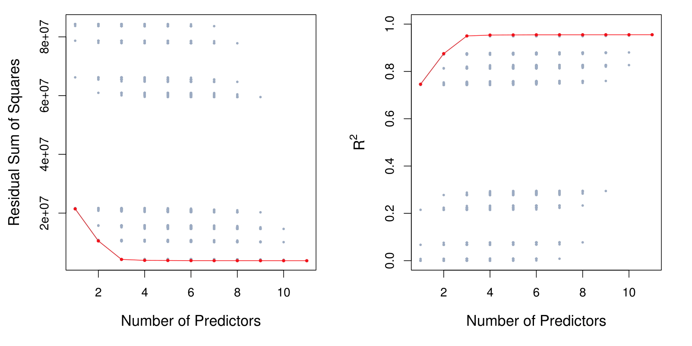
MGMT 47400: Predictive Analytics
Model Selection and Regularization
Overview
- Linear Model Selection and Regularization
- Subset Selection
- Stepwise Selection
- Forward Stepwise Selection
- Backward Stepwise Selection
- Choosing the Optimal Model
- Indirect Approaches
- Validation and Cross-Validation
- Shrinkage Methods
- Ridge Regression
- The Lasso
- Selecting the Tuning Parameter for Ridge Regression and Lasso
- Dimension Reduction Methods
- Principal Components Regression
- Partial Least Squares (PLS)
This lecture content is inspired by and replicates the material from An Introduction to Statistical Learning.
Linear Model Selection and Regularization
Linear Model Selection and Regularization
Recall the linear model
\[ Y = \beta_0 + \beta_1 X_1 + \cdots + \beta_p X_p + \epsilon. \]
In the lectures that follow, we consider some approaches for extending the linear model framework. We will generalize the linear model in order to accommodate non-linear, but still additive, relationships.
In the lectures covering Chapter 8, we consider even more general non-linear models.
In praise of linear models!
Despite its simplicity, the linear model has distinct advantages in terms of its interpretability and often shows good predictive performance.
Hence we discuss in this lecture some ways in which the simple linear model can be improved, by replacing ordinary least squares fitting with some alternative fitting procedures.
Why consider alternatives to least squares?
Prediction Accuracy: especially when \(p > n\), to control the variance.
Model Interpretability: By removing irrelevant features — that is, by setting the corresponding coefficient estimates to zero — we can obtain a model that is more easily interpreted. We will present some approaches for automatically performing feature selection.
Three classes of methods
Subset Selection. We identify a subset of the \(p\) predictors that we believe to be related to the response. We then fit a model using least squares on the reduced set of variables.Best Subset Selection, Foward Selection, and Backwards Selection are the main techniques here.
Shrinkage. We fit a model involving all \(p\) predictors, but the estimated coefficients are shrunken towards zero relative to the least squares estimates. This shrinkage (also known as regularization) has the effect of reducing variance and can also perform variable selection. Ridge Regression and Lasso are the main techniques here.
Dimension Reduction. We project the \(p\) predictors into a \(M\)-dimensional subspace, where \(M < p\). This is achieved by computing \(M\) different linear combinations, or projections, of the variables. Then these \(M\) projections are used as predictors to fit a linear regression model by least squares. Principal Components Regression and Partial Least Squares are the main techniques here.
Subset Selection
Best Subset Selection
The core idea is to identify a simpler model that includes only a subset of the \(P\) available predictors, thereby improving interpretability and potentially enhancing predictive performance.
To implement best subset selection systematically, we consider every possible combination of predictors and evaluate each resulting model. The process begins with the null model (\(M_0\)), which includes no predictors and only an intercept, meaning it predicts the sample mean for all observations. From there, models are incrementally built by incorporating different subsets of predictors, ultimately selecting the model that optimally balances predictive accuracy and complexity. Here are the steps:
Let \(\mathcal{M}_0\) denote the null model, which contains no predictors. This model simply predicts the sample mean for each observation.
For \(k = 1, 2, \ldots, p\):
Fit all \(\binom{p}{k}\) models, “\(p\) choose \(k\) models”, that contain exactly \(k\) predictors. \(\binom{p}{k} = \frac{p!}{k!(p-k)!}\)
Pick the best among these \(\binom{p}{k}\) models, and call it \(\mathcal{M}_k\). Here best is defined as having the smallest Residual Sum of Squares (RSS), or equivalently the largest \(R^2\).
Select a single best model from among \(\mathcal{M}_0, \ldots, \mathcal{M}_p\) using cross-validated prediction error, \(C_p\) (AIC), BIC, or adjusted \(R^2\). The goal is to choose the model with the smallest test error, not the smallest training error.
Example - Credit data set
For each possible model containing a subset of the ten predictors in the Credit data set, the Residual Sum of Squares (RSS) and \(R^2\) are displayed. The red frontier tracks the best model for a given number of predictors, according to RSS and \(R^2\).
Though the data set contains only ten predictors, the x-axis ranges from 1 to 11, since one of the variables is categorical and takes on three values, leading to the creation of two dummy variables.
The reason that there’s a lot of dots in this picture is because there’s a lot of possible sub models given 10 total predictors. We have \(2^{p} = 2^{10}\approx 1,000\) subsets.
The number \(2^p\) arises because each predictor (out of \(p\) predictors) can either be included or excluded from a subset model. This binary decision for each predictor gives \(2\) choices (include or exclude). When there are \(p\) predictors, the total number of possible subsets (or models) is calculated as \(2^p\).
Extensions to other models
The same ideas apply to other types of models, such as logistic regression.
When dealing with other type of models, instead of the RSS, we look into the deviance (D), which is commonly used in generalized linear models. The deviance is calculated as:
\[ D = -2 \cdot \log L_{\text{max}} \]
where:
- \(D\) is the deviance,
- \(\log L_{\text{max}}\) is the maximized log-likelihood of the model.
This formula allows the deviance to serve as a measure of goodness of fit, analogous to the residual sum of squares (RSS) in linear regression, but applicable to a broader class of models.
Stepwise Selection
Stepwise Selection
For computational reasons, best subset selection cannot be applied with very large \(p\).
Best subset selection may also suffer from statistical problems when \(p\) is large: larger the search space, the higher the chance of finding models that look good on the training data, even though they might not have any predictive power on future data.
Thus an enormous search space can lead to overfitting and high variance of the coefficient estimates. For the authors of the book, it is not recommended to use the best subset approach if you have more than 20 predictors.
For both of these reasons, stepwise methods, which explore a far more restricted set of models (\(p^2\)), are attractive alternatives to best subset selection.
Forward Stepwise Selection
Forward stepwise selection begins with a model containing no predictors, and then adds predictors to the model, one-at-a-time, until all of the predictors are in the model.
In particular, at each step the variable that gives the greatest additional improvement to the fit is added to the model.
Forward Stepwise Selection: In Detail
Let \(\mathcal{M}_0\) denote the null model, which contains no predictors.
For \(k = 0, \ldots, p - 1\):
2.1 Consider all \(p - k\) models that augment the predictors in \(\mathcal{M}_k\) with one additional predictor. This is different from what we were doing in in the best subset selection case. Here do not look at every possible model containing \(p\) predictors. Instead, we are just looking at every possible model that contains one more predictor than \(M_{k-1}\).
2.2 Choose the best among these \(p - k\) models, and call it \(\mathcal{M}_{k+1}\). Here best is defined as having smallest RSS or highest \(R^2\).
Select a single best model from among \(\mathcal{M}_0, \ldots, \mathcal{M}_p\) using cross-validated prediction error, \(C_p\) (AIC), BIC, or adjusted \(R^2\).
- Forward Stepwise Selection presents computational advantage over best subset selection. The total number of models evaluated is the sum of the sequence:
\[ p + (p - 1) + (p - 2) + \dots + 1 = \frac{p(p + 1)}{2} \]
For large \(p\), the term \(\frac{p(p + 1)}{2}\) is dominated by \(\frac{p^2}{2}\). Thus, the computational cost is approximately proportional to \(p^2\).
It is not guaranteed to find the best possible model out of all \(2^p\) models containing subsets of the \(p\) predictors.
Credit data example
The first four selected models for best subset selection and forward stepwise selection on the Credit data set.
| # Variables | Best subset | Forward stepwise |
|---|---|---|
| One | rating | rating |
| Two | rating, income | rating, income |
| Three | rating, income, student | rating, income, student |
| Four | cards, income, student, limit | rating, income, student, limit |
The first three models are identical but the fourth models differ.
This discrepancy happens because there is correlation between features.
Summary: Forward Stepwise Selection
Stepwise selection is a computationally efficient alternative to best subset selection in model building, especially with large predictor sets.
Highlights
- Stepwise selection offers a practical approach for model selection.
- Best subset selection can lead to overfitting, especially with many predictors.
- Forward stepwise selection considers fewer models than best subset, making it computationally efficient.
- Deviance generalizes residual sum of squares across various models.
- Best subset selection becomes impractical beyond 30-40 predictors due to computational limits.
- Forward stepwise may not always find the optimal model compared to best subset.
- Correlation between features impacts model selection outcomes between methods.
Key Insights
Computational Efficiency: Stepwise selection significantly reduces the number of models evaluated, making it feasible for larger datasets. This is essential in modern data analysis, where predictors can number in the thousands.
Overfitting Risks: With best subset selection, the risk of overfitting increases as the number of predictors grows, which can lead to poor performance on unseen data. This highlights the importance of model validation techniques.
Model Nesting: Forward stepwise selection builds models incrementally, ensuring that each new model is a superset of the previous one, which helps maintain a streamlined search process for the best predictors.
Deviance vs. RSS: Understanding the difference in metrics like deviance and residual sum of squares is crucial for accurately assessing model fit across various types of regression analyses.
Practical Limits: Most statistical packages struggle with subset selection beyond 30-40 predictors, indicating the need for streamlined methods like stepwise selection in high-dimensional contexts.
Model Comparison: Forward stepwise selection may yield different models than best subset selection, emphasizing the need for careful evaluation of model performance on independent datasets.
Correlation Effects: The discrepancies between the two methods arise from correlations among predictors, showcasing the intricate dynamics of variable selection in regression modeling.
Backward Stepwise Selection
Backward Stepwise Selection
Like forward stepwise selection, backward stepwise selection provides an efficient alternative to best subset selection.
However, unlike forward stepwise selection, it begins with the full least squares model containing all \(p\) predictors, and then iteratively removes the least useful predictor, one-at-a-time.
Backward Stepwise Selection: details
Let \(\mathcal{M}_p\) denote the full model, which contains all \(p\) predictors.
For \(k = p, p - 1, \ldots, 1\):
2.1 Consider all \(k\) models that contain all but one of the predictors in \(\mathcal{M}_k\), for a total of \(k - 1\) predictors.
2.2 Choose the best among these \(k\) models, and call it \(\mathcal{M}_{k-1}\). Here best is defined as having smallest RSS or highest \(R^2\).
Select a single best model from among \(\mathcal{M}_0, \ldots, \mathcal{M}_p\) using cross-validated prediction error, \(C_p\) (AIC), BIC, or adjusted \(R^2\).
More on Backward Stepwise Selection
Like forward stepwise selection, the backward selection approach searches through only \(1 + p(p+1)/2\) models, and so can be applied in settings where \(p\) is too large to apply best subset selection.
Like forward stepwise selection, backward stepwise selection is not guaranteed to yield the best model containing a subset of the \(p\) predictors.
Backward selection requires that the number of samples \(n\) is larger than the number of variables \(p\) (so that the full model can be fit). In contrast, forward stepwise can be used even when \(n < p\), and so is the only viable subset method when \(p\) is very large.
Summary: Backward Stepwise Selection
Backward stepwise selection removes predictors from a full model to improve efficiency in model selection, contrasting with forward stepwise selection.
Highlights
- Backward stepwise starts with a full model (\(M_p\)) and removes predictors one at a time.
- It evaluates the least useful predictor to minimize impact on model fit.
- This method is computationally efficient, considering around \(p^2/2\)models.
- Only applicable when the number of observations (\(n\)) is greater than the number of predictors.
- \(R^2\)and RSS might mislead model selection, focusing on training error rather than test error.
- Cross-validation, AIC, BIC, or adjusted \(R^2\)should guide the final model choice.
- Backward and forward selections are not guaranteed to find the best model but can yield good test set results.
Key Insights
Methodology Contrast: Backward stepwise selection is an efficient alternative to forward selection, emphasizing the removal of predictors rather than their addition. This reversal highlights different strategies in model optimization.
Model Evaluation: The approach assesses the least impactful predictors, ensuring that model performance remains stable as predictors are eliminated, which is crucial for maintaining predictive accuracy.
Computational Efficiency: Backward stepwise selection dramatically reduces computational load compared to best subset selection, making it a suitable option for larger datasets.
Observational Requirement: This method necessitates that the number of observations is greater than the number of predictors, ensuring that a least squares model can be appropriately fitted, which is a critical consideration in practical applications.
Training vs. Test Error: Relying solely on training error metrics like RSS and \(R^2\)can lead to overfitting, indicating the need for broader evaluation methods to predict future performance.
Model Selection Techniques: Utilizing techniques like cross-validation, AIC, or BIC for model selection can help mitigate the risks associated with simply opting for models with the best training error.
Outcome Consistency: While backward stepwise may not find the absolute best model, it can produce models that perform well on unseen data, demonstrating its practical utility in predictive modeling.
Choosing the Optimal Model
Choosing the Optimal Model
The model containing all of the predictors will always have the smallest RSS and the largest \(R^2\), since these quantities are related to the training error.
We wish to choose a model with low test error, not a model with low training error. Recall that training error is usually a poor estimate of test error.
Therefore, RSS and \(R^2\) are not suitable for selecting the best model among a collection of models with different numbers of predictors.
Estimating test error: two approaches
Indirect: We can indirectly estimate test error by making an adjustment to the training error to account for the bias due to overfitting.
Direct: We can directly estimate the test error, using either a validation set approach or a cross-validation approach, as discussed in previous lectures.
Indirect Approaches
\(C_p\), AIC, BIC, and Adjusted \(R^2\)
These techniques adjust the training error for the model size, and can be used to select among a set of models with different numbers of variables.
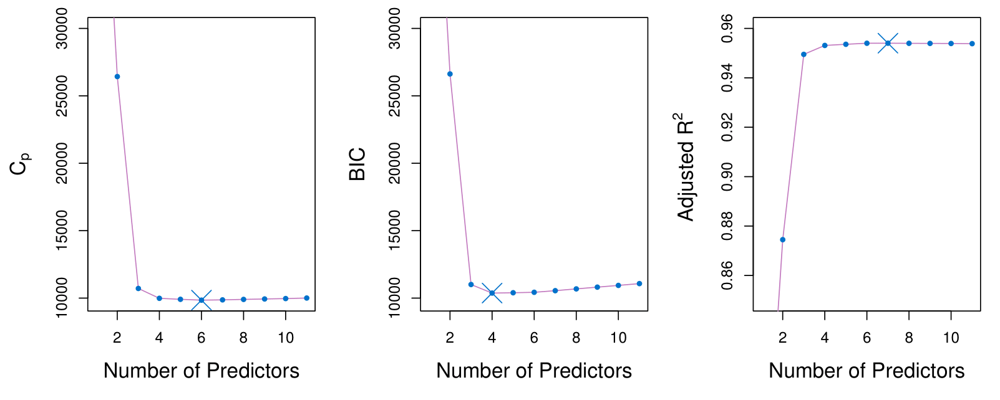
The figure displays \(C_p\), BIC, and adjusted \(R^2\) for the best model of each size produced by best subset selection on the Credit data set.
- It suggests that we must choose a model with 4 to 6 predictors.
- The main recommmendation is to keep the model as simple as possible. By identifying that the values do not change too much as we increase the number of predictors, a model with 4 predictors will be recommended.
Mallows’ \(C_p\)
Mallows’ \(C_p\) balances model fit and model complexity:
\[ C_p = \frac{1}{n} \left( \text{RSS} + 2d\hat{\sigma}^2 \right) \]
where:
- \(d\): Total number of parameters used in the model (including the intercept).
- \(\hat{\sigma}^2\): Estimate of the error variance \(\epsilon\), associated with each response measurement.
- \(\text{RSS}\): Residual Sum of Squares, measuring the error between observed and predicted values.
- \(n\): Number of observations in the dataset.
Explanation
- The \(\text{RSS}\) measures the fit.
- The penalty term \(2d\hat{\sigma}^2\) discourages overfitting.
Decision: The lowest, the better!
AIC
The Akaike Information Criteria (AIC) criterion is defined for a large class of models fit by maximum likelihood:
\[ \text{AIC} = -2 \log L + 2 \cdot d, \]
where \(L\) is the maximized value of the likelihood function for the estimated model.
- In the case of the linear model, \(-2 \log L = \frac{RSS}{\sigma^2}\)
- In the case of the linear model with Gaussian errors, maximum likelihood and least squares are the same thing, and \(C_p\) and AIC are equivalent.
- AIC and Mallow’s \(C_p\) are proportional to each other.
- AIC is a good approach for non-linear models, e.g. logistic regression.
BIC
This is the Bayesian Information Criterion (BIC):
\[ \text{BIC} = \frac{1}{n} \left( \text{RSS} + \log(n)d\hat{\sigma}^2 \right). \]
Like \(C_p\), the BIC will tend to take on a small value for a model with a low test error, and so generally we select the model that has the lowest BIC value.
Notice that BIC replaces the \(2d\hat{\sigma}^2\) used by \(C_p\) with a \(\log(n)d\hat{\sigma}^2\) term, where \(n\) is the number of observations.
Since \(\log n > 2\) for any \(n > 7\), the BIC statistic generally places a heavier penalty on models with many variables, and hence results in the selection of smaller models than \(C_p\) or AIC.
Adjusted \(R^2\)
For a least squares model with \(d\) variables, the adjusted \(R^2\) statistic is calculated as
\[ \text{Adjusted } R^2 = 1 - \frac{\text{RSS}/(n - d - 1)}{\text{TSS}/(n - 1)}. \]
where TSS is the total sum of squares, \(TSS = \Sigma_i^n(y_i - \bar{y})^2\).
Unlike \(C_p\), AIC, and BIC, for which a small value indicates a model with a low test error, a large value of adjusted \(R^2\) indicates a model with a small test error.
Maximizing the adjusted \(R^2\) is equivalent to minimizing \(\frac{\text{RSS}}{n - d - 1}\). While RSS always decreases as the number of variables in the model increases, \(\frac{\text{RSS}}{n - d - 1}\) may increase or decrease, due to the presence of \(d\) in the denominator.
Unlike the \(R^2\) statistic, the adjusted \(R^2\) statistic pays a price for the inclusion of unnecessary variables in the model.
Summary: \(C_p\), AIC, BIC, and adjusted R-squared
Estimating test error for models involves adjusting training error or using direct methods like cross-validation. Tools like CP, AIC, BIC, and adjusted R-squared help select optimal models.
Highlights
- Estimating test error is crucial for model selection.
- Two approaches: indirect adjustment of training error and direct estimation methods.
- \(C_p\), AIC, BIC, and adjusted \(R^2\) help model comparison.
- A model should minimize \(C_p\) and BIC while maximizing adjusted \(R^2\).
- Adjusted \(R^2\) allows meaningful comparisons across different models.
- Cross-validation is versatile and can be applied to various models.
- Simplicity is favored; fewer predictors often yield better results.
Key Insights
Test Error Estimation: Accurate test error estimation is vital for model evaluation. It helps choose the best model among multiple options, ensuring reliability in predictions.
Indirect vs. Direct Methods: Understanding both indirect (adjusting training error) and direct (cross-validation) methods provides flexibility in model evaluation, catering to different scenarios in data analysis.
Model Selection Criteria: \(C_p\), AIC, BIC, and adjusted \(R^2\) serve as essential criteria for model selection. They help quantify model performance and complexity, aiding in decision-making.
Minimizing \(C_p\) and BIC: Aiming for lower \(C_p\) and BIC values suggests a more parsimonious model, which is often preferred for its simplicity and interpretability while still capturing the necessary relationships.
Cross-Validation Versatility: Cross-validation is a powerful tool applicable to a wide range of models, including non-linear ones, making it a preferred method for estimating test error in various contexts.
Adjusted \(R^2\) Utility: Unlike traditional \(R^2\), adjusted \(R^2\) provides a way to compare models with differing numbers of predictors, addressing the limitations of model evaluation in regression analysis.
Simplicity Preference: Favoring simpler models with fewer predictors can lead to better generalization and reduced risk of overfitting, aligning with the principle of Occam’s Razor in statistical modeling.
Validation and Cross-Validation
Validation and Cross-Validation
Each of the procedures returns a sequence of models \(\mathcal{M}_k\) indexed by model size \(k = 0, 1, 2, \ldots\). Our job here is to select \(\hat{k}\). Once selected, we will return model \(\mathcal{M}_{\hat{k}}\).
We compute the validation set error or the cross-validation error for each model \(\mathcal{M}_k\) under consideration, and then select the \(k\) for which the resulting estimated test error is smallest.
This procedure has an advantage relative to AIC, BIC, \(C_p\), and adjusted \(R^2\), in that it provides a direct estimate of the test error, and doesn’t require an estimate of the error variance \(\sigma^2\).
It can also be used in a wider range of model selection tasks, even in cases where it is hard to pinpoint the model degrees of freedom (e.g., the number of predictors in the model) or hard to estimate the error variance \(\sigma^2\).
Credit data example
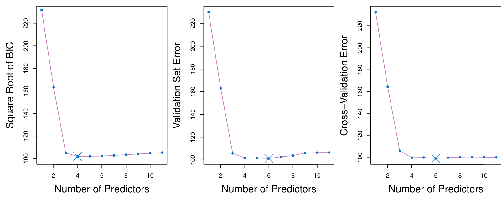
The validation errors were calculated by randomly selecting three-quarters of the observations as the training set, and the remainder as the validation set.
The cross-validation errors were computed using \(k = 10\) folds. In this case, the validation and cross-validation methods both result in a six-variable model.
However, all three approaches suggest that the four-, five-, and six-variable models are roughly equivalent in terms of their test errors.
In this setting, we can select a model using the one-standard-error rule.
- Estimate Test Error: We compute the test error (e.g., MSE) for each model size.
- Calculate Standard Error: Compute the standard error (SE) of the test error for each model size to account for variability.
- Select the Model: Identify the model with the lowest test error (the “best” model). Choose the simplest model whose test error is within one SE of the lowest test error.
Summary: Validation and Cross-validation
Validation and cross-validation help select the best model size by estimating prediction error without needing sigma squared or the number of parameters.
Highlights
- Validation splits data into training and validation sets for error estimation.
- Cross-validation trains on multiple parts of data to improve error estimates.
- Choosing the optimal model size minimizes validation error effectively.
- Avoiding sigma squared estimation is crucial in high-dimensional data scenarios.
- The one standard error rule favors simpler models that perform similarly to the best.
- BIC tends to prefer smaller models compared to AIC in error estimation.
- New data challenges continuously evolve statistical methods and research.
Key Insights
Model Selection: Validation and cross-validation provide direct methods for estimating prediction error, making them essential for model selection. This ensures the chosen model performs well on unseen data.
Error Estimation: By dividing data into training and validation sets, we can effectively estimate how well a model will generalize, leading to more robust predictions in practice.
Avoiding Estimation Challenges: In high-dimensional settings, traditional methods for estimating sigma squared and the number of parameters (\(d\)) can be unreliable. Cross-validation mitigates these concerns, simplifying the model selection process.
Simplicity Preference: The one standard error rule encourages selecting simpler models that perform nearly as well as the best, enhancing interpretability and reducing overfitting.
Iterative Evaluation: Cross-validation’s iterative nature allows for more reliable error estimates by using multiple data partitions, thus improving the stability of model evaluations.
BIC vs. AIC: BIC’s stronger penalty for model complexity often results in smaller models compared to AIC, which can lead to different model selection outcomes.
Evolving Challenges: The increasing complexity of data in fields like high-dimensional statistics presents ongoing challenges, propelling research and innovation in statistical methodologies.
Shrinkage Methods
Shrinkage Methods
The subset selection methods use least squares to fit a linear model that contains a subset of the predictors.
As an alternative, we can fit a model containing all \(p\) predictors using a technique that constrains or regularizes the coefficient estimates, or equivalently, that shrinks the coefficient estimates towards zero.
It may not be immediately obvious why such a constraint should improve the fit, but it turns out that shrinking the coefficient estimates can significantly reduce their variance.
Ridge regression
Ridge regression
Recall that the least squares fitting procedure estimates \(\beta_0, \beta_1, \ldots, \beta_p\) using the values that minimize
\[ \text{RSS} = \sum_{i=1}^n \left( y_i - \beta_0 - \sum_{j=1}^p \beta_j x_{ij} \right)^2. \]
- In contrast, the ridge regression coefficient estimates \(\hat{\beta}^R\) are the values that minimize
\[ \sum_{i=1}^n \left( y_i - \beta_0 - \sum_{j=1}^p \beta_j x_{ij} \right)^2 + \lambda \sum_{j=1}^p \beta_j^2 = \text{RSS} + \lambda \sum_{j=1}^p \beta_j^2, \]
where \(\lambda \geq 0\) is a tuning parameter, to be determined separately.
- Shrinkage penalty: \(\lambda \sum_{j=1}^p \beta_j^2\) penalizes coefficients that get too large. The model will pay a price according to the number of non-zero coefficients.
Ridge regression
As with least squares, ridge regression seeks coefficient estimates that fit the data well, by making the RSS small.
However, the second term, \(\lambda \sum_j \beta_j^2\), called a shrinkage penalty, is small when \(\beta_1, \ldots, \beta_p\) are close to zero, and so it has the effect of shrinking the estimates of \(\beta_j\) towards zero.
The tuning parameter \(\lambda\) serves to control the relative impact of these two terms on the regression coefficient estimates.
Selecting a good value for \(\lambda\) is critical; cross-validation is used for this.
Credit data example
In the left-hand panel, each curve corresponds to the ridge regression coefficient estimate for one of the ten variables, plotted as a function of \(\lambda\). As \(\lambda\) increases, it pushes the coefficients towards zero.
The right-hand panel displays the same ridge coefficient estimates as the left-hand panel, but instead of displaying \(\lambda\) on the \(x\)-axis, we now display \(\|\hat{\beta}_\lambda^R\|_2 / \|\hat{\beta}\|_2\), where \(\hat{\beta}\) denotes the vector of least squares coefficient estimates.
The notation \(\|\beta\|_2\) denotes the \(\ell_2\) norm (pronounced “ell 2”) of a vector, and is defined as \(\|\beta\|_2 = \sqrt{\sum_{j=1}^p \beta_j^2}\).
In the right-hand panel, when \(\|\hat{\beta}_\lambda^R\|_2 / \|\hat{\beta}\|_2 = 1\), \(\lambda = 0\).
Ridge Regression: Scaling of Predictors
The standard least squares coefficient estimates are scale equivariant: multiplying \(X_j\) by a constant \(c\) simply leads to a scaling of the least squares coefficient estimates by a factor of \(1/c\). In other words, regardless of how the \(j\)th predictor is scaled, \(X_j \hat{\beta}_j\) will remain the same.
In contrast, the ridge regression coefficient estimates can change substantially when multiplying a given predictor by a constant, due to the sum of squared coefficients term in the penalty part of the ridge regression objective function.
Therefore, it is best to apply ridge regression after standardizing the predictors, using the formula
\[ \tilde{x}_{ij} = \frac{x_{ij}}{\sqrt{\frac{1}{n} \sum_{i=1}^n (x_{ij} - \bar{x}_j)^2}} \]
- After standardizing the predictors, their standard deviations will be 1. That make the features comparable and make the coefficients comparable.
Why Does Ridge Regression Improve Over Least Squares?
The Bias-Variance Tradeoff
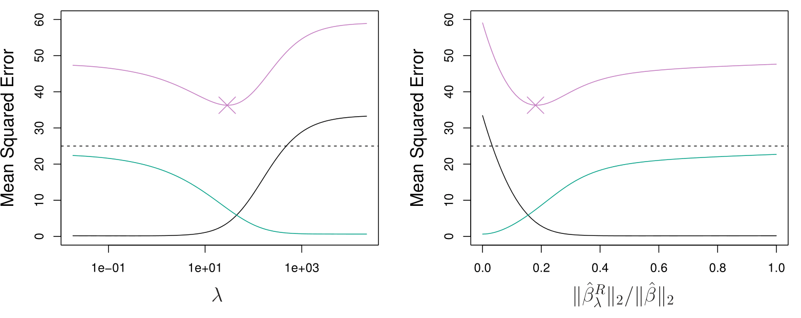
Simulated data with \(n = 50\) observations, \(p = 45\) predictors, all having nonzero coefficients.
Squared bias (black), variance (green), and test mean squared error (purple) for the ridge regression predictions on a simulated data set, as a function of \(\lambda\) and \(\|\hat{\beta}_\lambda^R\|_2 / \|\hat{\beta}\|_2\).
The horizontal dashed lines indicate the minimum possible MSE. The purple crosses indicate the ridge regression models for which the MSE is smallest.
Summary: Shrinkage methods
Shrinkage methods like Ridge regression and Lasso use penalties to shrink coefficients towards zero, improving model performance, especially with large datasets.
Highlights
- Ridge regression uses a penalty to shrink coefficients towards zero.
- Lasso also shrinks coefficients but can set some to exactly zero.
- These methods are effective for large datasets with many variables.
- Fast computation has revived interest in these techniques recently.
- Cross-validation is crucial for selecting the optimal tuning parameter, Lambda.
- Scaling of variables is important when applying Ridge regression.
- Ridge regression reduces variance while maintaining bias, leading to better mean squared error.
Key Insights
Shrinkage Techniques: Ridge regression and Lasso are modern approaches to regularization, balancing model fit and complexity. Shrinking coefficients helps mitigate overfitting, particularly in high-dimensional data.
Tuning Parameter Lambda: The choice of Lambda is critical; it determines the strength of the penalty. Using cross-validation to optimize this parameter is essential for achieving the best model performance.
Bias-Variance Tradeoff: Ridge regression effectively controls variance without significantly increasing bias, thereby minimizing mean squared error. This tradeoff is vital for model accuracy.
Large Datasets: As datasets grow in size and complexity, shrinkage methods become increasingly relevant. They are designed to handle situations where the number of predictors can exceed the number of observations.
Importance of Scaling: Unlike least squares, the performance of Ridge regression is sensitive to the scale of the predictors. Standardizing variables ensures comparability and effectiveness of the shrinkage.
Continuous Shrinkage: Ridge regression produces coefficients that are close to zero but rarely exactly zero, which differs from Lasso. This characteristic can be advantageous for retaining all predictors in the model.
Current Research Trends: Shrinkage methods are a hot topic in statistical research, with ongoing developments aimed at enhancing their effectiveness and applicability across various fields.
The Lasso
The Lasso
Ridge regression does have one obvious disadvantage: unlike subset selection, which will generally select models that involve just a subset of the variables, ridge regression will include all \(p\) predictors in the final model.
The Lasso, first published in 1996 by Rob Tibshirani, one of the authors of the book, is an alternative to ridge regression that overcomes this disadvantage. The lasso coefficients, \(\hat{\beta}^L_\lambda\), minimize the quantity
\[ \sum_{i=1}^n \left( y_i - \beta_0 - \sum_{j=1}^p \beta_j x_{ij} \right)^2 + \lambda \sum_{j=1}^p |\beta_j| = RSS + \lambda \sum_{j=1}^p |\beta_j|. \]
- In statistical parlance, the lasso uses the sum of absolute values, an \(\ell_1\) (pronounced “ell 1”) penalty, instead of an \(\ell_2\) penalty. The \(\ell_1\) norm of a coefficient vector \(\beta\) is given by \(\|\beta\|_1 = \sum |\beta_j|\).
The Lasso
As with ridge regression, the lasso shrinks the coefficient estimates towards zero.
However, in the case of the lasso, the \(\ell_1\) penalty has the effect of forcing some of the coefficient estimates to be exactly equal to zero when the tuning parameter \(\lambda\) is sufficiently large.
Hence, much like best subset selection, the lasso performs variable selection. It is a combination of shirinkage and selection of variables.
We say that the lasso yields sparse models — that is, models that involve only a subset of the variables.
As in ridge regression, selecting a good value of \(\lambda\) for the lasso is critical; cross-validation is again the method of choice.
Example: Credit Dataset
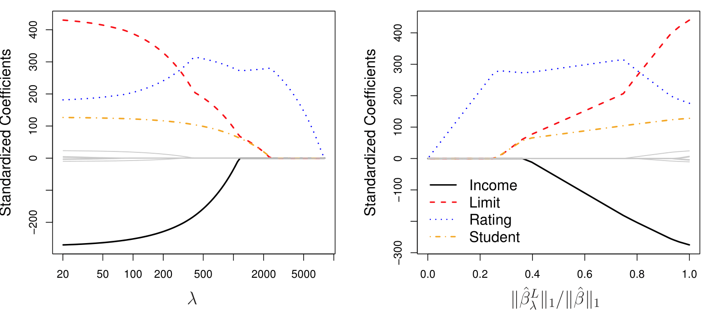
The Variable Selection Property of the Lasso
Why is it that the lasso, unlike ridge regression, results in coefficient estimates that are exactly equal to zero?
One can show that the lasso and ridge regression coefficient estimates solve the problems (equivalent to Lagrange formulations):
\[ \text{minimize}_{\beta} \sum_{i=1}^{n} \left( y_i - \beta_0 - \sum_{j=1}^{p} \beta_j x_{ij} \right)^2 \quad \text{subject to} \quad \sum_{j=1}^{p} |\beta_j| \leq s \]
and
\[ \text{minimize}_{\beta} \sum_{i=1}^{n} \left( y_i - \beta_0 - \sum_{j=1}^{p} \beta_j x_{ij} \right)^2 \quad \text{subject to} \quad \sum_{j=1}^{p} \beta_j^2 \leq s, \]
respectively.
The Lasso and Ridge Picture
This picture helps to explain why the lasso gives sparsity:
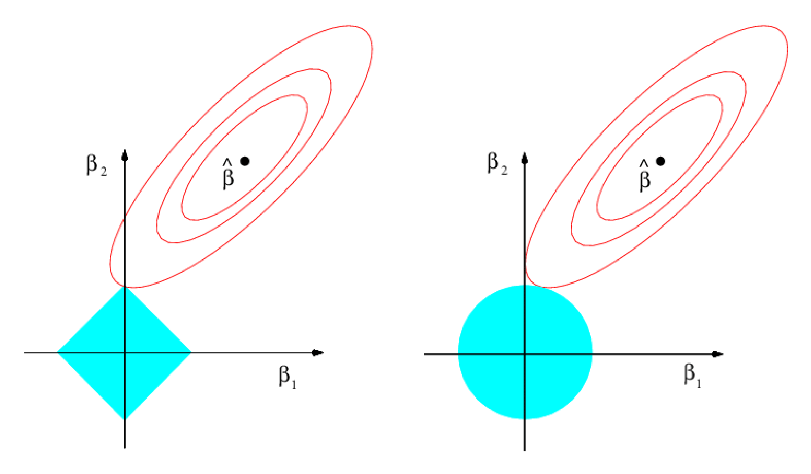
- On the right we have the ridge regression and on the left is the lasso regression.
- It is possible to see where the where the red boundary touch the blue constraing.
- In the case of the ridge regression (right plot), we see that the solution does not create a zero.
- In the case of the lasso regression (left plot), we see that the solution does create a zero for one of the predictors.
Comparing the Lasso and Ridge Regression
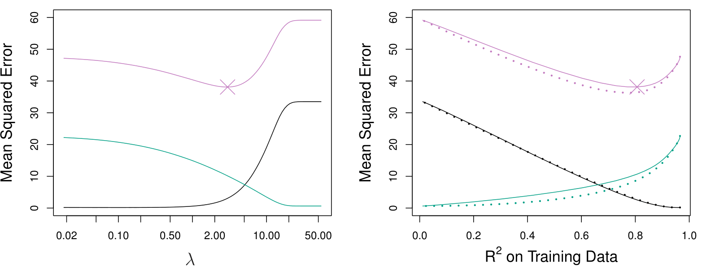
Simulated data with \(n = 50\) observations, \(p = 45\) predictors, all having nonzero coefficients.
Left: Lasso: Plots of squared bias (black), variance (green), and test MSE (purple) for the lasso on simulated data set.
Right: Comparison of squared bias, variance, and test MSE between lasso (solid) and ridge (dashed). Both are plotted against their \(R^2\) on the training data, as a common form of indexing. The crosses in both plots indicate the lasso model for which the MSE is smallest.
Comparing the Lasso and Ridge Regression: continued
Left: Plots of squared bias (black), variance (green), and test MSE (purple) for the lasso. The simulated data equals to the one used before, except that now only two predictors are related to the response.
Right: Comparison of squared bias, variance, and test MSE between lasso (solid) and ridge (dashed). Both are plotted against their \(R^2\) on the training data, as a common form of indexing. The crosses in both plots indicate the lasso model for which the MSE is smallest.
Conclusions about Ridge and Lasso
These two examples illustrate that neither ridge regression nor the lasso will universally dominate the other.
In general, one might expect the lasso to perform better when the response is a function of only a relatively small number of predictors.
However, the number of predictors that is related to the response is never known a priori for real data sets.
A technique such as cross-validation can be used in order to determine which approach is better on a particular data set.
Summary: Lasso
The Lasso regression technique improves upon ridge regression by both shrinking coefficients and performing variable selection, setting some coefficients to zero.
Highlights
- Lasso regression shrinks coefficients while allowing for variable selection.
- It uses an \(L_1\) penalty, contrasting with ridge’s \(L_2\) penalty.
- The concept of sparsity is central to Lasso’s effectiveness.
- Increased computational efficiency has popularized Lasso in recent years.
- Lasso is particularly useful in high-dimensional datasets with many features.
- Cross-validation is essential for selecting the optimal lambda value.
- Performance varies: Lasso excels in sparse models, while ridge may perform better in dense ones.
Key Insights
Lasso vs. Ridge: Lasso regression not only shrinks coefficients but also sets some to zero, enabling simpler models through variable selection. This property makes it particularly valuable in high-dimensional settings where many variables may be irrelevant.
\(L_1\) vs. \(L_2\) Penalty: The \(L_1\) penalty used in Lasso creates a constraint that promotes sparsity, while the \(L_2\) penalty in ridge regression tends to retain all variables with smaller coefficients. This difference is crucial for effective model building.
Sparsity: The concept of sparsity refers to models that only include a small subset of variables. Sparse models are easier to interpret and can enhance predictive performance when only a few predictors are relevant.
Computational Advances: Recent improvements in computational power and techniques in convex optimization have made applying Lasso feasible even on large datasets, broadening its applicability across various fields.
Real-World Applications: In situations like medical diagnostics, where finding a minimal number of significant predictors is vital, Lasso provides a practical solution by efficiently identifying key variables among thousands of measurements.
Choosing Lambda: The tuning parameter lambda is critical; cross-validation is typically used to determine its optimal value, balancing model complexity and predictive accuracy.
Model Performance: The effectiveness of Lasso and ridge regression varies based on the underlying data structure. Lasso performs better with sparse true models, while ridge regression may be more effective when many predictors are significant.
Selecting the Tuning Parameter for Ridge Regression and Lasso
Selecting the Tuning Parameter for Ridge Regression and Lasso
- As for subset selection, for ridge regression and lasso we require a method to determine which of the models under consideration is best.
- That is, we require a method selecting a value for the tuning parameter \(\lambda\) or equivalently, the value of the constraint \(s\).
- Cross-validation provides a simple way to tackle this problem. We choose a grid of \(\lambda\) values, and compute the cross-validation error rate for each value of \(\lambda\).
- We then select the tuning parameter value for which the cross-validation error is smallest.
- Finally, the model is re-fit using all of the available observations and the selected value of the tuning parameter.
Credit data example

Left: Cross-validation errors that result from applying ridge regression to the Credit data set with various values of \(\lambda\). \(\lambda = 0.05\) minimizes the cross-validation error.
Right: The coefficient estimates as a function of \(\lambda\). The vertical dashed line indicates the value of \(\lambda\) selected by cross-validation.
Simulated Data Example

Left: Ten-fold cross-validation MSE for the lasso, applied to the sparse simulated data set.
Right: The corresponding lasso coefficient estimates are displayed. The vertical dashed lines indicate the lasso fit for which the cross-validation error is smallest.
Summary: Selecting the tuning parameter (lambda)
Selecting the tuning parameter (lambda) for ridge regression and lasso is crucial, as it significantly influences model performance. Cross-validation is an effective method for this selection.
Highlights
- Lambda is crucial: Affects the solution from full least squares to zero coefficients.
- ⚖️ Regularization importance: Zero lambda means no regularization; high lambda leads to zero solutions.
- Cross-validation advantage: Ideal for tuning parameters as it doesn’t require the unknown number of parameters (\(d\)).
- Ridge example: With lambda of 100, all variables appear included, but coefficients are shrunk.
- Cross-validation curves: Show how errors change with varying lambda values for both ridge and lasso.
- Lasso effectiveness: Properly identifies non-zero coefficients while setting others to zero.
- Simulation success: In a simulated scenario, the model accurately identifies the correct number of non-zero coefficients.
Key Insights
Importance of Lambda: The tuning parameter lambda significantly influences the model’s complexity and overall performance. Choosing lambda wisely is essential for achieving the desired balance between bias and variance.
Cross-validation as a solution: Cross-validation provides a robust framework for assessing model performance across different lambda values without needing to know the exact number of parameters, making it a practical choice for tuning.
Degree of freedom confusion: In ridge regression, even when coefficients are shrunk, counting parameters can be misleading, as all variables remain included in the model.
Regularization trade-offs: The process of regularization through ridge and lasso not only simplifies models but also introduces nuanced definitions of model complexity, changing our understanding of ‘degrees of freedom.’
Error analysis via curves: Cross-validation curves reveal how model errors fluctuate with lambda, helping visualize optimal tuning points.
Lasso’s precision: Lasso regression demonstrates its strength in feature selection, effectively pinpointing relevant variables while ignoring the irrelevant ones, enhancing interpretability.
Dimension Reduction Methods
Dimension Reduction Methods
The methods that we have discussed so far have involved fitting linear regression models, via least squares or a shrunken approach, using the original predictors, \(X_1, X_2, \ldots, X_p\).
We now explore a class of approaches that transform the predictors and then fit a least squares model using the transformed variables. We will refer to these techniques as dimension reduction methods.
Dimension Reduction Methods: Details
- Let \(Z_1, Z_2, \ldots, Z_M\) represent \(M < p\) linear combinations of our original \(p\) predictors. That is,
\[ Z_m = \sum_{j=1}^p \phi_{mj} X_j \quad \text{(1)} \]
for some constants \(\phi_{m1}, \ldots, \phi_{mp}\).
- We can then fit the linear regression model,
\[ y_i = \theta_0 + \sum_{m=1}^M \theta_m z_{im} + \epsilon_i, \quad i = 1, \ldots, n, \quad \text{(2)} \]
using ordinary least squares.
- Note that in model (2), the regression coefficients are given by \(\theta_0, \theta_1, \ldots, \theta_M\). If the constants \(\phi_{m1}, \ldots, \phi_{mp}\) are chosen wisely, then such dimension reduction approaches can often outperform OLS regression.
Dimension Reduction Methods
- Notice that from definition (1),
\[ \sum_{m=1}^M \theta_m z_{im} = \sum_{m=1}^M \theta_m \sum_{j=1}^p \phi_{mj} x_{ij} = \sum_{j=1}^p \sum_{m=1}^M \theta_m \phi_{mj} x_{ij} = \sum_{j=1}^p \beta_j x_{ij}, \] where
\[ \beta_j = \sum_{m=1}^M \theta_m \phi_{mj}. \quad \text{(3)} \]
Hence model (2) can be thought of as a special case of the original linear regression model.
Dimension reduction serves to constrain the estimated \(\beta_j\) coefficients, since now they must take the form (3).
Can win in the bias-variance tradeoff.
Summary: Dimension reduction
Dimension reduction transforms original predictors into fewer linear combinations, improving model fitting while maintaining low bias and variance.
Highlights
- Dimension Reduction simplifies models by using fewer predictors.
- New predictors are linear combinations of original ones.
- Fitting uses least squares on transformed predictors.
- Aim: Reduce dimensions from \(P\) predictors to \(M\) (\(M < P\)).
- Balances bias and variance effectively.
- Similar to Ridge and Lasso, but with different coefficient constraints.
- Works best when \(M < P\); otherwise, it results in standard least squares.
Key Insights
Efficiency in Modeling: Dimension reduction allows for a simpler model with fewer predictors, leading to potentially better performance without losing significant information. This method is advantageous in high-dimensional datasets.
Construction of New Predictors: By creating new predictors through linear combinations, we can capture essential relationships in the data while reducing complexity, which may help in enhancing interpretability.
Bias-Variance Trade-off: This approach effectively manages the bias-variance trade-off, leading to models with lower bias and variance compared to using all original features, which is crucial for better generalization to unseen data.
Use of Least Squares: While retaining the least squares fitting method, this approach modifies the predictor space, allowing for a fresh perspective on regression problems and leading to potentially improved outcomes.
Relation to Ridge and Lasso: Although dimension reduction shares similarities with Ridge and Lasso in terms of model fitting, it introduces unique constraints on coefficients, which can lead to different insights about the data.
Importance of Dimensions: The effectiveness of dimension reduction hinges on the condition that \(M\) (new predictors) is less than \(P\) (original predictors). If \(M = P\), the method reduces to standard least squares, negating its advantages.
Innovation in Coefficient Form: The requirement for coefficients to adopt a specific structure in dimension reduction can provide insights into the relationships among predictors, enhancing model interpretability and utility.
Principal Components Regression
Principal Components Regression
By far the most famous dimension reduction approach. It involves a two-step procedure:
- Step 1: we find what are called principal components of the data matrix (linear combinations of the predictors)
- Step 2: we perform least squares regression using those principal components as predictors
The first principal component is that (normalized) linear combination of the variables with the largest variance.
The second principal component has the largest variance, subject to being uncorrelated with the first.
And so on.
Hence with many correlated original variables, we replace them with a small set of principal components that capture their joint variation.
The intuition is that if you have a data set with 45 variables and compute a few principal components, those might capture most of the variation in the data.
Pictures of PCA
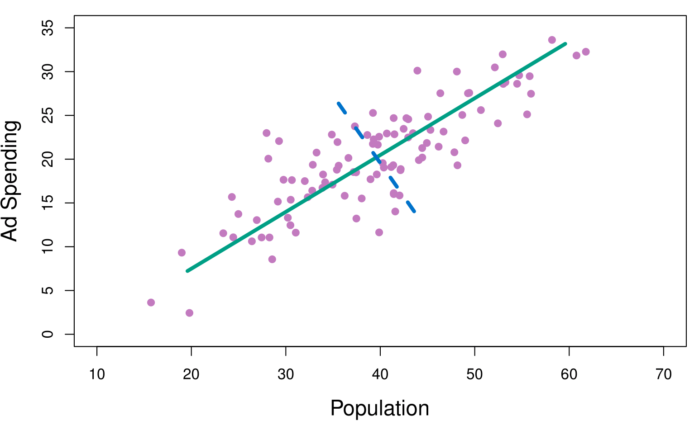
The population size (pop) and ad spending (ad) for 100 different cities are shown as purple circles. The green solid line indicates the first principal component, and the blue dashed line indicates the second principal component.
Note that these two principal components are uncorrelated!
Pictures of PCA
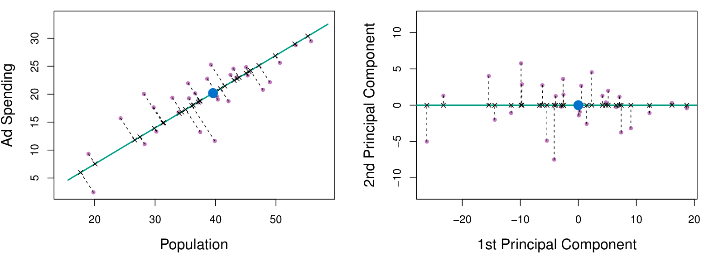
A subset of the advertising data.
Left: The first principal component, chosen to minimize the sum of the squared perpendicular distances to each point, is shown in green. These distances are represented using the black dashed line segments.
Right: The left-hand panel has been rotated so that the first principal component lies on the x-axis.
Pictures of PCA
Plots of the first principal component scores \(z_{i1}\) versus pop and ad. The relationships are strong.
We can visualize each principal component by plotting it against the original variables, such as population and ad spending.
We observe that the first principal component is highly correlated with both population and ad spending. This indicates that the first principal component effectively captures the variability in these two variables, summarizing the data in a meaningful way.
This suggests a valuable insight: instead of using the original variables (population and ad spending) directly, we can use the first principal component as a single, simplified predictor. We have the assumption that a linear combination of the predictors that has high variance is probably going to be associated with the response.
- For example, if my goal is to predict a response variable like sales, we can incorporate the first principal component as a predictor in the model. This approach reduces the dimensionality of the data while retaining much of the information, potentially improving model interpretability and efficiency.
Pictures of PCA
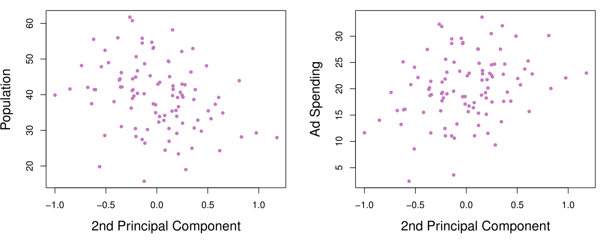
Plots of the second principal component scores \(z_{i2}\) versus pop and ad. The relationships are weak.
Application to Principal Components Regression
PCR was applied to two simulated data sets. The black, green, and purple lines correspond to squared bias, variance, and test mean squared error, respectively.
Left: Simulated data with \(n= 50\) observations, \(p= 45\) predictors. The plot shows that a model with \(\approx 18\) principal components can provide a good result.
Right: Simulated data with \(n= 50\) observations, \(p= 45\) predictors, except that now only two predictors are related to the response. The plot shows that a model with \(\approx 25\) principal components can provide a good result.
Choosing the Number of Principal Component Directions \(M\)
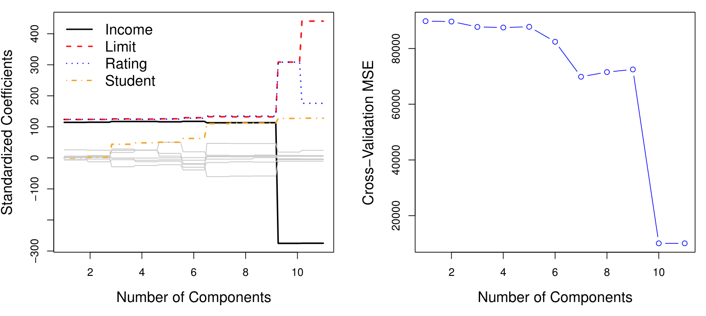
Left: PCR standardized coefficient estimates on the Credit data set for different values of \(M\).
Right: The 10-fold cross-validation MSE obtained using PCR, as a function of \(M\). For each of the models we can see the cross-validated mean squared error. Here we have disappointing result. If we pick a model for which the mean squared error is as small as possible, here the mean squared error is really as small as possible when we have a model with 10 or 11 components. However, in our dataset \(M = 11\) is going to be the regular least squares on the original data using all variables. Basically, principal components regression does not provide any gains in this case.
Partial Least Squares (PLS)
Partial Least Squares (PLS)
PCR identifies linear combinations, or directions, that best represent the predictors \(X_1, \dots, X_p\).
These directions are identified in an unsupervised way, since the response \(Y\) is not used to help determine the principal component directions.
That is, the response does not supervise the identification of the principal components.
Consequently, PCR suffers from a potentially serious drawback: there is no guarantee that the directions that best explain the predictors will also be the best directions to use for predicting the response.
A potential solution is to use Partial Least Squares (PLS).
Partial Least Squares (PLS)
Like PCR, PLS is a dimension reduction method, which first identifies a new set of features \(Z_1, \dots, Z_M\) that are linear combinations of the original features, and then fits a linear model via OLS using these \(M\) new features.
But unlike PCR, PLS identifies these new features in a supervised way – that is, it makes use of the response \(Y\) in order to identify new features that not only approximate the old features well, but also that are related to the response.
PLS approach attempts to find directions that help explain both the response and the predictors.
Partial Least Squares (PLS): Details
After standardizing the \(p\) predictors, PLS computes the first direction \(Z_1\) by setting each \(\phi_{1j}\) in (1) equal to the coefficient from the simple linear regression of \(Y\) onto \(X_j\).
One can show that this coefficient is proportional to the correlation between \(Y\) and \(X_j\).
Hence, in computing \(Z_1 = \sum_{j=1}^p \phi_{1j} X_j\), PLS places the highest weight on the variables that are most strongly related to the response.
Subsequent directions are found by taking residuals and then repeating the above prescription.
The authors of the book highlight that PLS does not bring to much gain when compared to Ridge regression approach, for example.
Summary: Principal Components Regression (PCR)
Principal Components Regression (PCR) reduces dimensionality by finding principal components and using them in least squares regression for efficient modeling.
Highlights
- Principal Components Regression (PCR) uses a two-step procedure to reduce dimensionality.
- First, principal components with the highest variance are identified from the data.
- The first principal component is aligned with the direction of maximum variance.
- The second principal component is uncorrelated with the first and captures additional variance.
- Using few principal components can effectively summarize complex datasets.
- Choosing the optimal number of components is crucial for minimizing mean squared error.
- Partial Least Squares (PLS) improves upon PCR by considering response variables in component selection.
Key Insights
Dimensionality Reduction: PCR simplifies models by reducing the number of predictors while retaining essential information, aiding in interpretation and computation. This is particularly useful with datasets containing many variables relative to observations.
Uncorrelated Components: The process ensures that the principal components are uncorrelated, which helps in creating more robust models by minimizing multicollinearity issues common in regression analysis.
Model Selection: The selection of the number of components directly impacts model performance. Cross-validation is recommended to find the optimal number of components for the best predictive accuracy.
Efficiency in Prediction: PCR can significantly enhance prediction accuracy when dealing with high-dimensional data by focusing on variance rather than individual variable contributions.
Assumption of Variance-Response Relationship: The effectiveness of PCR hinges on the assumption that high variance directions in predictors correlate with the response, which may not always hold true.
Partial Least Squares: PLS offers a supervised alternative to PCR by incorporating response variable information, potentially leading to better predictive models, although it may not always outperform PCR.
Modern Applications: Techniques like PCR and PLS are increasingly relevant in fields with large datasets, where simpler models are needed to prevent overfitting and enhance interpretability.
Summary
Summary
Key Concepts
- Three classes of methods:
- Subset Selection: Focuses on identifying subsets of predictors for simpler models.
- Shrinkage Methods: Regularizes coefficients to reduce variance and improve model performance (e.g., Ridge, Lasso).
- Dimension Reduction: Reduces the number of predictors using linear combinations (e.g., PCA, PLS).
- Model Selection Criteria:
- Use metrics like $C_p $, AIC, BIC, and Adjusted $R^2 $to balance model fit and complexity.
- Cross-validation is essential for estimating test error and selecting tuning parameters.
- Bias-Variance Tradeoff:
- Shrinkage methods improve prediction accuracy by reducing variance while maintaining bias.
Practical Insights
- Best Subset Selection:
- Computationally intensive (\(2^p\) models).
- Not recommended for \(p > 20\).
- Stepwise Selection:
- More efficient (\(p^2\) models).
- Forward and backward methods balance performance and computation.
- Ridge vs. Lasso:
- Ridge shrinks coefficients but includes all predictors.
- Lasso performs variable selection by setting coefficients to zero.
- Principal Components Regression (PCR):
- Reduces dimensionality by finding uncorrelated components.
- Works well when high variance directions correlate with the response.
- Partial Least Squares (PLS):
- Supervised alternative to PCR, incorporating response variable information.